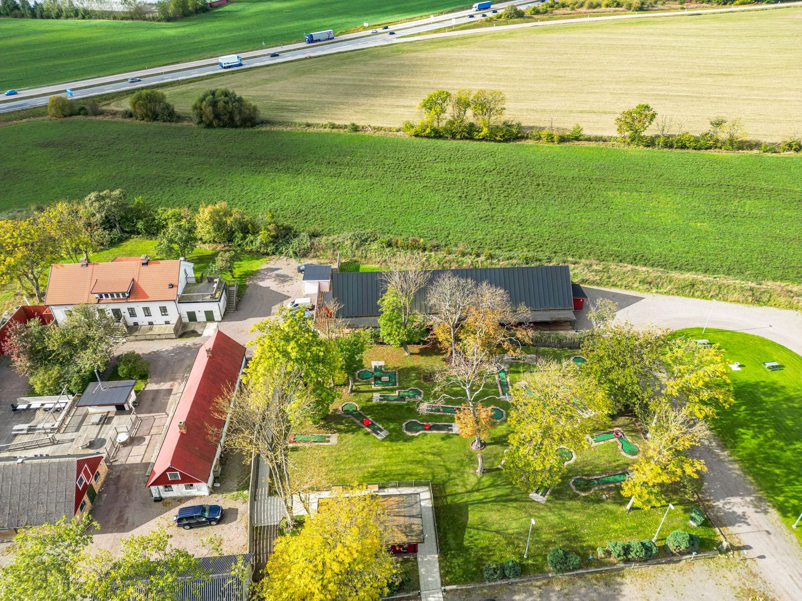

Jetez un œil
Promenez-vous dans la ferme
Découvrez les chambres et la salle des fêtes en 360°, ou survolez le domaine.

L'entrée Entrez et garez-vous ici. Le parking est gratuit pour les hôtes.
Faites glisser l'image pour regarder autour de vous. Cliquez sur les anneaux au sol pour avancer.


D'en haut
Survolez Gammeleksgården
Une minute au-dessus de la ferme, des champs et de l'E6, avec l'Öresund en arrière-plan.
Vu du ciel
La ferme au cœur de la campagne


